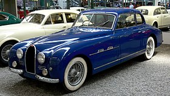
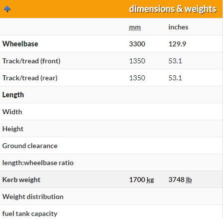

| Bugatti Type 101 |
|---|
| 
57454 (blue) & 101500 (cream) |
| Overview |
|
Manufacturer Buggati |
Six Type 101 chassis were built after an initial converted Type 57 chassis prototype. At least two more Type 57s were also converted to Type 101 specifications, making a total of nine Type 101 cars produced. The last Type 101 was built in 1965 by Ghia designed by Virgil Exner for the last remaining Type 101 chassis.[2] It was exhibited at the Turin Motor Show in an attempt to revive the marque, but financing could not be arranged and production plans were scrapped. Exner owned the car for many years, and it has lately appeared in public at the Pebble Beach Concours d'Elegance.
Engine1951 Buggati Type 101 specificaations
